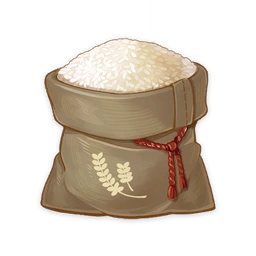

Produk hasil samping adalah produk yang dihasilkan selain produk utama. Hasil samping dari serealia, kacang-kacangan, dan umbi masih bisa diolah menjadi bahan atau produk pangan, yang pastinya dapat diolah dengan proses yang tidak sulit.
Jenis bahan dan kandungannya 
1. Bekatul
Bekatul adalah lapisan terluar dari butiran beras yang terbentuk selama proses penggilingan beras menjadi beras putih. Bekatul terdiri dari beberapa komponen, termasuk sekam, aleuron, endosperma, dan lapisan serat. Bekatul memiliki kandungan serat yang tinggi dan juga mengandung sejumlah nutrisi seperti vitamin B, mineral, dan antioksidan.
Kandungan gizi:
- Serat 20%
- Protein 10%
- Lemak 2%
- Karbohidrat 65%
- Vitamin dan mineral 5%
2. Ampas Kedelai
Ampas kedelai, juga dikenal sebagai bubur kedelai, merupakan produk sampingan yang dihasilkan saat proses ekstraksi susu kedelai. Setelah kedelai direndam, digiling, dan diperas, ampas kedelai yang tersisa adalah serat dan protein yang tidak larut dalam air. Ampas kedelai umumnya berwarna kuning pucat dan memiliki tekstur yang lembut.
Kandungan gizi:
- Serat 20%
- Protein 50%
- Lemak 5%
- Karbohidrat 20%
- Vitamin dan mineral 5%
3. Kulit Singkong
Kulit singkong adalah bagian luar yang melapisi daging singkong. Kulit singkong memiliki tekstur yang kasar dan keras. Secara tradisional, kulit singkong sering dianggap sebagai limbah dan tidak dimanfaatkan. Namun, beberapa penelitian telah menunjukkan potensi kulit singkong untuk dijadikan olahan makanan yang bergizi.
Kandungan gizi:
- Selulosa 30%
- Hemiselulosa 25%
- Lignin 40%
- Pektin 5%
4. Daun Ubi
Ubi jalar atau biasa disebut ketela rambat banyak tumbuh subur di daerah pedesaan. Di Indonesia, ubi jalar memiliki banyak varietas berdasarkan warna kulit umbi yaitu kekuningan, putih, violet, dan ungu.Tanaman ubi jalar hasil utama yang dimanfaatkan adalah umbinya, sedangkan kulit ubi dan daun ubi sebagai hasil sampingnya.
Kandungan gizi:
- Protein 3%
- Lemak 1%
- Karbohidrat 15%
- Serat 5%
- Vitamin A 200-500μg
- Vitamin C 10-20mg
- Zat besi 1-2mg
- Kalsium 100-200mg
- Kalium 300-500mg
5. Ampas Kelapa
Ampas kelapa adalah sisa atau residu yang dihasilkan setelah daging kelapa diperas untuk menghasilkan santan atau minyak kelapa. Ampas kelapa terdiri dari serat-serat yang tersisa setelah pengambilan air dan minyak dari daging kelapa.
Kandungan gizi:
- Serat pangan 45%
- Protein 10%
- Lemak 8%
- Air 15%
- Karbohidrat 20%
- Vitamin dan mineral 2%
Teknik Pengolahan
•Teknik Pengolahan Panas Basah
Teknik pengolahan basah adalah Teknik mengolah bahan makanan dengan menggunakan bahan dasar cairan untuk mematangkannya. Bahan dasar cairan yang digunakan bervariasi seperti air, kaldu, santan, susu atau bahan lainnya.
Jenis teknik pengolahan panas basah:
• Merebus (Boiling)
• Mengukus (Steaming)
• Menggulai/Menyetup (Stewing)
• Merebus cairan sebanyak bahan pangan
(Poaching)
• Merebus dengan sedikit cairan (Braising)
• Mengetim dan Simmering
•Teknik Pengolahan Panas Kering
Teknik pengolahan panas kering (dry heat cooking) adalah teknik mengolah makanan tanpa menggunakan air dalam proses pematangannya, tetapi menggunakan minyak yang dapat membuat suhunya bisa mencapai 180 derajat celcius.
Jenis teknik pengolahan panas kering:
• Menggoreng dengan minyak banyak (Deep frying)
• Menggoreng dengan minyak sedikit (Shallow frying)
• Menumis (Sauteing)
• Memanggang (Baking)
• Membakar (Grilling)
• Roasting
Teknik Pengawetan Makanan 
Teknik Pengawetan Fisik
Pengawetan dengan Suhu Rendah
Pengawetan Suhu Rendah adalah pengawetan bahan pangan dengan memasukkan ke ruangan bersuhu rendah yang dapat memperlambat pertumbuhan mikroorganisme.
Jenis Pengawetan Suhu Rendah:
-
Pendinginan/Cooling(Suhu: -20°C sampai 10°C).
-
Pembekuan/Freezing(Suhu: -120°C sampai -240°C).
-
Pembekuan Cepat/Quick freezing(Suhu: -240°C sampai -400°C).
Pengawetan dengan Suhu Tinggi
Pengawetan suhu tinggi adalah pengawetan dengan memasukkan makanan ke dalam ruangan yang panas/hangat yang dapat mematikan mikroorganisme.
Jenis Pengawetan Suhu Tinggi:
-
Blansing(Suhu: 70°C).
-
Pasteurisasi(Suhu: 80-100°C).
-
Sterilisasi(Suhu: 100°C).
Pengawetan dengan Pengeringan
Pengawetan dengan pengeringan makanan adalah proses penghilangan sebagian atau seluruh air dari makanan dengan tujuan untuk memperpanjang umur simpan, menghambat pertumbuhan mikroorganisme, dan menjaga kualitas produk.
Teknik Pengawetan Biologis

Pengawetan makanan secara biologis melibatkan penggunaan mikroorganisme baik dalam bentuk bakteri, ragi, atau jamur yang memiliki sifat pengawet alami atau melakukan proses fermentasi untuk mencegah pertumbuhan mikroorganisme patogen dan memperpanjang umur simpan makanan.
Jenis Pengawetan Biologis:
-
Fermentasi:Fermentasi adalah pengawetan dengan memanfaatkan mikroorganisme yang akan menghasilkan asam dari hasil metabolisme yang digunakan untuk menghambat pertumbuhan mikroorganisme jahat.
-
Enzim:Enzim adalah molekul protein yang berfungsi sebagai biokatalisator dan dapat digunakan untuk menghambat pertumbuhan mikroorganisme, memperpanjang umur simpan makanan, dan mempertahankan kualitas organoleptik (rasa, aroma, tekstur) makanan.
Teknik Pengawetan Kimiawi
Pengawetan makanan secara kimiawi adalah pengawetan makanan dengan menggunakan bahan kimia yang dapat memperlambat ataupun membunuh mikroorganisme berbahaya pada makanan.
Jenis Pengawetan Kimiawi:
-
Pengawet alami:Pengawet alami adalah jenis pengawet dengan bahan bahan yang didapat dari bahan alami contohnya gula, garam, bawang putih, cuka, kunyit dan kluwak.
-
Pengawet buatan:Pengawet buatan adalah jenis pengawet dengan bahan bahan buatan contohnya adalah natrium benzoat, kalium nitrat, asam sorbat, dan sebagainya
-
Pengasapan:Pengasapan adalah metode yang digunakan untuk mempertahankan dan memperpanjang umur simpan makanan dengan menggunakan asap yang mengandung senyawa antimikroba.